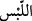

“Yahut ayaklarınızın altından” Fir’avn’u denizde boğduğu ve Kârûn’u yerin dibine
geçirdiği gibi size de bir azab göndermeye kadirdir.
Denilmiştir ki: “Üstünüzden” ifadesi, yöneticileriniz ile önde gelen güç odakları
tarafından gelebilecek belâlara baskı ve zulme delalet eder... “Ayaklarınızın altından”
tabiri ise, kötü niyetli kölelerinizden, cemiyetin çapulcu ve beyinsiz tabakasından
kaynaklanacak ayaklanma ya da yağmalamalara işarettir.
Âyetteki “__WORD__ (veya)” lafzı, üstten ve alttan aynı anda gelecek afetlerle topyekün bir
yok oluşun bu ümmet için mukadder olmadığına işaret eder. Nuh (a.s.)’in kavmine
yapıldığı gibi hem üstten hem alttan gelen azâba da mâni yoktur.
“Ya da sizi parti parti birbirinize düşürüp” “
”; karıştırmak demektir. Yani “O
sizi karıştırır birbirinize düşürür”
“
”; bir husûsta bir araya gelen topluluk demektir.
Yani sizi karıştırır da, dinî bir kaygıdan ötürü değil kendi arzularına uyarak bölük
pörçük olan küçük fırkalara, türlü mezheplere ayrılırsınız. Her grup, kendi seçtiği
öndere tâbi olur. Gruplar arasındaki ayrılıktan aranızda savaş patlak verir. Bir grup
diğerini vurmak için adeta coşar, bahane arar ya da birbirinizin kökünü kurutursunuz.
Böylece aranızdaki karışma ittifaka değil ayrılığa ve çalkalanmaya vesile olur.
“kiminize kiminizin hıncını tattırmaya kadirdir.” Yani bazınızla, bazınızı savaştırır.
Mü’minlerin hıncını kâfirlere tattırması ve bunun aksi Allah Teâlâ’nın sünnetindendir.
Bazen de bir kısım kâfirlerin hıncını, başka kâfirlere tattırır. Bazı mü’minlere de başka
mü’minlerin hıncını tattırır. Nitekim Hak Teâlâ’nın cemâl ve celâline dayanan terbiyenin
gereği olarak çoğu zamanlarda ve asırlarda görülen budur.
Hadiste şöyle buyurulmuştur:
“Rabb’imden üç şey istedim bunlardan ikisini bana ihsan etti, birini vermedi:
Rabb’imden ümmetimin kıtlıkla helâk edilmemesini diledim, bu isteğimi kabul etti.
Rabb’imden ümmetimin sel ile helâk olmamasını niyaz ettim, bunu da kabul buyurdu.
Rabb’imden ümmetimin düşmanlığının birbirine olmamasını diledim, fakat bu
isteğimi geri çevirdi.”[121] Buradaki kıtlıktan maksat, bütün ümmeti içine alacak umumî
bir kıtlıktır. Selden murad ise Nuh (a.s.)’ın kavmini helâk eden tufan gibi umumî bir sel
felâketidir.
Şeyh Üftâde Efendi (k.s.) der ki: “Esasen Nuh (a.s.)’ın kavmine gönderilen tufan her
otuz senede bir, daha az şiddette görülür. Çok yağmur yağar, bazı evler ve köyler su
altında kalır.”
Yukarıda meâlini verdiğimiz hadis-i şerifteki “be’s” yani düşmanlık ile Peygamber
efendimiz, harbleri ve fitneleri kastetmiştir.
Hadisde şöyle buyurulmuştur: “Ümmetimin yok oluşu, savaşla ve vebâ (salgın
hastalıklar) ile olacaktır.”[122]